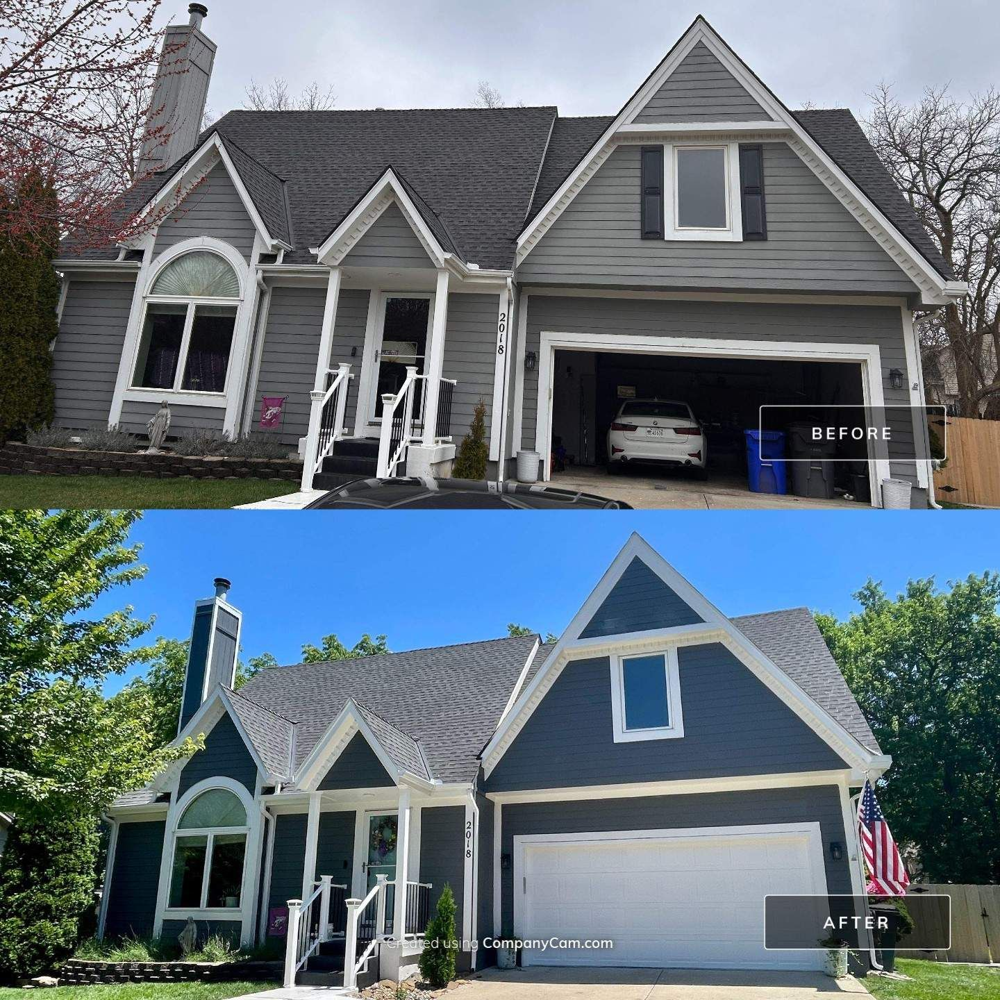

Gardner's newer neighborhoods are hitting their first repaint — and the first repaint is the one that sets up the next fifteen years.
Get Your Free EstimateGardner has grown fast, and most of its housing stock is from the 2000s onward — which means a wave of homes are hitting their first repaint right about now. Here's what matters: builder-grade paint was applied fast and thin, and the first professional repaint is your chance to fix that permanently.
Done right — caulked seams, primed bare spots, two proper coats of quality Sherwin-Williams product — your first repaint outlasts the builder coat by years. Done cheap, you're back on a ladder in five. We do it right, and we'll show you the difference line by line in a written quote.

Very. Builder-grade paint is designed to look good at closing, not to last. The good news: a properly prepped repaint with quality product resets the clock for 10+ years.
Yes — Gardner and southwest Johnson County are part of our regular service area, and the drive doesn't change your price.
Size, stories, and surface condition set the number. Free owner-led walkthrough and a written quote that holds.
Yes — we'll help you pick a palette that clears your HOA and still stands out on the street.
Owner-led walkthrough, detailed written quote, a number that holds.
Request a Free EstimateOr call/text 913-210-1041